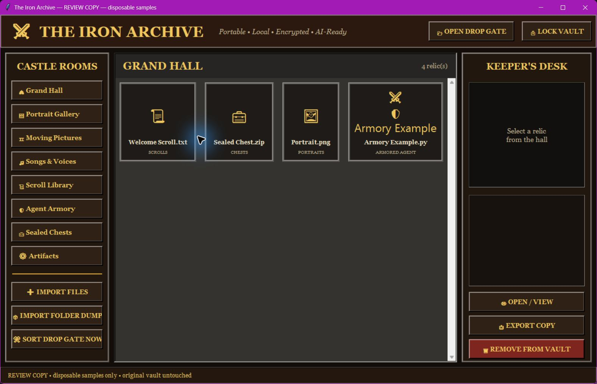

THE IRON ARCHIVE
Your files.
Your castle.
A local encrypted vault with seven rooms, picture previews and a little more character.
Try the browser companion ↓Windows edition · $1.99 ↗One-time introductory price. No account or subscription required to run the Windows app.FREE BROWSER COMPANION
Walk through the gates.
Add a few files or use the samples. Browse their castle rooms, seal an encrypted browser archive, then unlock it again. Files stay in your browser; originals are never changed or uploaded.
This companion uses Web Crypto AES-GCM. The Windows app uses Fernet. Their archive formats are separate and cannot open one another.
Nothing loaded. Try the samples or add copies.
Up to 20 MB total; 5 MB per file. Session memory only: download an encrypted archive before leaving. No password recovery. Exports are decrypted copies. Clearing the session drops app references; it does not securely erase browser or operating-system memory.THE WINDOWS EDITION
A home on your own computer.

Seven castle rooms. Portraits, Moving Pictures, Songs & Voices, Scrolls, Agents, Chests and Artifacts.
Local encrypted storage. Password-derived Fernet encryption and an encrypted index.
Keep your originals. Import Files and Import Folder add copies. Preview pictures and export files when needed.
Setup, privacy and important behavior
Extract the complete ZIP and open OPEN THE IRON ARCHIVE. Python and dependencies are included. Windows x64; ARM requires Windows x64 emulation. Tested by fresh extraction and real GUI/function checks on the builder’s Windows machine.
Room assignment uses filename/file-type rules. The Agent Armory stores code; it does not run AI guards. SORT DROP GATE NOW removes dropped plaintext after successful import: put copies there, or use the source-preserving Import controls.
No password recovery. Keep separate backups. Previews and exports are decrypted copies; temporary preview deletion on lock is ordinary deletion, not secure erasure. Very large files require sufficient RAM. No independent security certification is claimed.